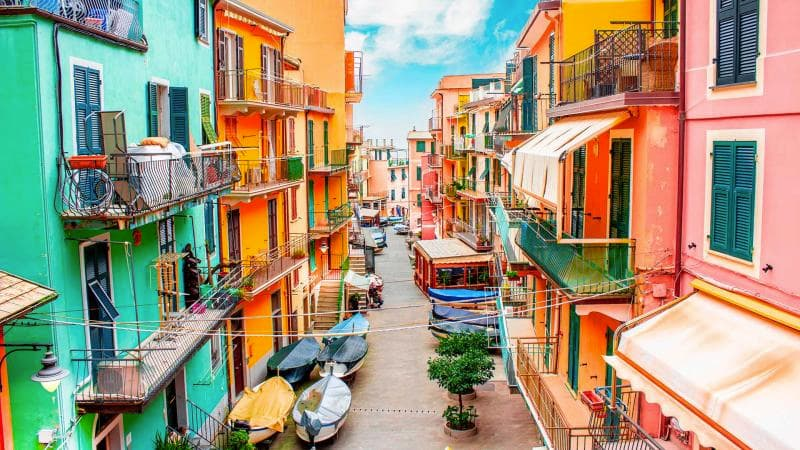

Будинок за €1: чи варто його купувати та скільки можна заробити на «квадратах» Італії
Італія поки що залишається одним із небагатьох куточків у Європі, де нерухомість все ще є досить доступною.
Огляд ринку
Пандемія завдала величезного удару по ринку нерухомості Італії — у 2020 році у деяких містах країни ціни на житло знизилися майже вдвічі. Але вже наступного, 2021-го, року кількість угод почала збільшуватися — нагодою обзавестися італійськими «квадратами» за заниженими прайсами активно користувалися інвестори, особливо іноземні.
«У 2022-му ціни повернулися майже до допандемійних позначок і продовжують зростати. Це означає, що потенціал італійської нерухомості далеко не вичерпаний, а тому вона набирає нової інвестиційної привабливості у покупців, серед яких велику частку складають також українці»,
Осередком попиту є північні міста Італії, тут відбувається не менше 70% угод із купівлі-продажу нерухомості. Поза конкуренцією Мілан разом зі столицею Рим. Вони залишаються найзатребуванішими і найдорожчими, попри всі кризи. Щоб купити тут нерухомість, варто розраховувати на бюджет не менше €120 тис. Для порівняння: на півночі — у Турині — можна купити однокімнатну квартиру площею близько 50 кв м за €60−70 тис.
«До речі, Турин подорожчав майже удвічі. У 2021 році квартири, які коштують сьогодні €60−70 тис., купувались за €34−36 тис. Інвестори заробили на такій стратегії перепродажу не менше 40% річних, що взагалі нонсенс для Європи»,
Найменший інтерес викликає Калабрія — південний захід країни. Загалом, якщо порівнювати з іншими країнами Євросоюзу, в Італії спостерігається найменша динаміка цін. За п’ять останніх років вартість житлових об'єктів у країні зросла на 7%, тоді як у середньому в ЄС — на 32%. Купити квартиру в Італії можна від €30 тис. Все залежить від локації, метражу та стану будівлі.
Орієнтовна ціна кв м: апартаменти у новобудові — від €2 500; квартира на вторинному ринку — від €500; будинки на вторинному ринку — від €1 600; комерційне приміщення — від €1 370; земельної ділянки (під забудову) — від €250.
Кому і за що полюбилася Італія
Нерухомість Італії завжди користувалася попитом у нерезидентів. Зараз на ринку спостерігається велика активність з боку ізраїльтян та жителів тих європейських країн, де жорсткіші умови на ринку нерухомості та вищі ціни на купівлю житла. Українських покупців також побільшало.
«Вибір українців часто стоїть між Іспанією та Італією. І у цьому двобої здебільшого перемагає остання. Від початку війни в Україні спостерігаємо зростання попиту серед наших громадян на Італію майже на 30%»,
Українці обирають для себе великі міста з розвиненою інфраструктурою, такі як Турин, де можна реалізувати себе, з погляду роботи чи підприємництва, а також влаштувати дітей у кращі школи та університети. Також серед популярних запитів — нерухомість в районі озера Комо, курортне містечко Сальсамаджоре-Терме, Адріатичне узбережжя.
За словами експертки, квартири для власного проживання купують близько 20−30% клієнтів, які звертаються до агенції. Більшість покупців розглядають Італію, як країну для інвестицій.
Охоче купують також комерційну нерухомість: діючі готелі, виноробні та готові бізнеси в Італії. При цьому вартість окремих об'єктів може дорівнювати вартості квартири у Києві. Наприклад, є пропозиції готелів від €350 тис., або готовий ресторан від €170 тис., або ж виноробне господарство за €390 тис.
Будинок за €1: міф чи реальність
Італія славиться своєю програмою «купити будинок за 1 євро» у невеликих регіонах. За словами Ірини Кнорр, така програма справді є, і у різних регіонах свої умови. Але якщо рахувати вигоди від такого придбання, то вони навіть дуже сумнівні.
При купівлі будинку за €1 євро ставляться додаткові умови, наприклад: постійне проживання в цьому будинку (прописка), не можна здавати в оренду, обов'язкова повна реконструкція за 3 роки, із залученням спеціалізованих ліцензованих компаній тощо.
«Також покупець обмежений у виборі варіантів. Зазвичай, це міста, що вмирають, адже програма націлена на збільшення чисельності населення в них. Коротше кажучи, занадто багато обмежень. В Італії і так багато бюджетної нерухомості, і при цьому немає жодних обмежень. Купив, зробив ремонт тоді, коли зміг, і живи або здавай»,
Як купити та за що доведеться платити
Закони Італії знаходяться на боці власника, і при купівлі нерухомості — будь-то резидент чи іноземець — він отримує повне право власності на квартиру. При цьому оформляти житло можна особисто або за довіреністю на свого представника.
У середньому, від моменту перегляду варіантів і пропозиції з купівлі до безпосередньої угоди проходить близько 3-х місяців. У випадку з українцями, рієлтори зауважують, що власники інколи погоджуються на більші терміни, розуміючи важкість ситуації, зокрема, щодо процедури виводу коштів на купівлю.
Угоди проводяться виключно у євро і безготівково. Купити будь-що за готівку у Італії неможливо. Але правила фінансового моніторингу в країні мають свої особливості.
«Італія не запитує джерело походження коштів, проте не допускає фінансових трикутників. Що це означає? Якщо ти українець, але платиш за купівлю нерухомості з банківського рахунку, відкритого в іншій країні, потрібно доказувати своє тимчасове резидентство там. Тобто потрібно мати підстави на те, чому ми оплачуємо з банківського рахунку, наприклад, у Польщі. Для цього підійдуть, скажімо, договір на оренду квартири та квитанції за комунальні послуги»,
Важливо, щоб банківський рахунок за кордоном був оформлений саме на особу покупця. Тобто у питаннях походження коштів є послаблення, проте на інших етапах є контроль.
Для купівлі нерухомості покупцю обов’язково мати закордонний паспорт та італійський податковий номер (codice fiscale). Його можна впродовж 2 тижнів отримати, надіславши дистанційний запит до консульства Італії.
Загалом, процедура купівлі виглядає так:-
Вибір об'єкта.
Покупець приїздить до Італії, разом із агентом продивляється попередньо обрані варіанти квартир. Якщо йому щось сподобалось, він разом із рієлтором складає «пропозицію продавцю» (proposta d'acquisto). Продавець має право відхилити чи прийняти пропозицію. На даному етапі можна поторгуватись за ціну квартири — якщо це робити уміло, то дисконт може сягнути навіть 10% від вартості квартири.
-
Підписання попереднього договору.
Коли сторони домовилися про всі умови, вони підписують попередній договір купівлі-продажу у нотаріуса. Покупець вносить аванс до 10% від вартості об'єкта. Ці гроші зберігаються у нотаріуса. У разі відмови зі сторони покупця дана сума не повертається.
-
Підписання договору та реєстрація угоди.
Якщо документи на квартиру готові, то це відбувається досить швидко. Нотаріус реєструє договір купівлі-продажу в податковій службі Італії і сплачує відповідні податки від імені покупця. Також договір варто зареєструвати у Публічному реєстрі та поставити на облік у Земельному кадастрі. Після цього покупець отримує сертифікат на право власності.
Податки та витрати при операціях із нерухомістю
В Італії типово європейські податки на нерухомість. Покупець нерухомості платить реєстраційний, іпотечний і кадастровий податки, інколи ПДВ, а також декілька фіксованих зборів.
При купівлі нерухомості у забудовника треба сплатити:
- реєстраційний, іпотечний і кадастровий податки — по €200 кожний,
- ПДВ — 10% від кадастрової вартості об'єкта,
- інші фіксовані збори — до €350.
При купівлі у фізособи на вторинному ринку:
- реєстраційний податок — до 9% від кадастрової вартості об'єкта,
- іпотечний — €50,
- податок на реєстрацію землі — €50.
Квартира, яка купується, як перше житло у Італії, оформляється за зниженим податком до 3%. Щоб зареєструвати квартиру, як перше житло, потрібно у ній прописатись і пожити не менше місяця.
Серед інших додаткових витрат:
- реєстраційні збори — до €500 євро,
- нотаріус — 1−3% від суми угоди,
- комісія агенції з нерухомості (є обов'язковою) — до 5%, але не менше €6 000.
Податок на прибуток від здачі нерухомості в оренду — до 21%. Якщо орендує квартиру студент — то до 10%. Якщо нерухомість здається в оренду та власник не є резидентом Італії — податок на дохід в Італії платити не потрібно. Власник сплачує податки на доходи лише у країні свого громадянства.
Незалежно від того, здається нерухомість в оренду чи ні, власник має сплачувати:
- щорічний податок — 0,2−0,4% від кадастрової вартості, якщо власник проживає у квартирі, і 0,86%, якщо мешкає в іншому будинку,
- обов'язкове страхування — 1−2% від вартості нерухомості. Але тут є один нюанс — цей платіж може бути включений до балансу щомісячних комунальних або кондомініальних зборів. Цей аспект треба уточнювати перед купівлею. При виборі квартири важливо завчасно дізнатися, які витрати на обслуговування.
Щодо перепродажу нерухомості, то тут податків немає.
Приклади вдалих інвестицій
Варіант 1: придбання однокімнатної квартири у Турині для здачі в орендуВартість квартири — €60 тис. Мінімальна ставка оренди — 500 €/місяць. Відповідно, плата за оренду на рік становитиме: €500*12 = €6 000.
Податок на володіння€480 (при максимальній ставці — 0,8%). Податок з прибутку — €1 260, або €600 (якщо вдасться знайти орендаря студента).
Відповідно, чистий прибуток становитиме: 4 260 €/рік або 355 €/міс, зі студентом — 4 920€/рік або 410€/міс.
Варіант 2: міні-хостел для студентівУ період карантину було популярно викуповувати з дисконтом до 40% три- та чотирикімнатні квартири у Турині за €80 тис. Далі ці квартири розділяли таким чином, щоб була окрема зона для відпочинку, кухня та окремі автономні кімнати. Робили косметичний євроремонт. Це обходилося у €5−6 тис. Такі квартири виконують функцію міні-гуртожитку у Турині і користуються високим попитом у студентів. Замість однієї орендної плати власник отримує з 1 студента, щонайменше, €300 оренди і платить знижені податки.
Так, трикімнатна квартира, переобладнана у міні-гуртожиток приносить: €300*3*12 = €10 800. Податок на володіння — €680. Податок з прибутку — €1 800. Разом, на рік: €10 800 — €680 — €1 800 = €8 320
Такі квартири — міні-гуртожитки — є досить ліквідними, оскільки користуються попитом у інвесторів. На перепродажі, відразу після ремонту, можна заробити до 30% від початкової вартості.
Ризики та підводні камені
Ринок нерухомості Італії має свою специфіку, а тому купувати нерухомість нерезиденту самотужки, без супроводу місцевого експерта, не варто.
По-перше, далеко не всі нотаріуси в країні згодні працювати з іноземцями. Це, насамперед, пов’язано з ризиковістю фінансових операції, адже нотаріус несе відповідальність за перевірку особи покупця, продавця, та приймає на свій рахунок кошти, як гарантію угоди.
По-друге, це специфіка права. В Італії існує близько 20 форм права власності, і онлайн-перекладач не допоможе розібратись у цьому питанні.
«Маємо випадок, коли до нас звернувся уже постфактум клієнт. Він вирішив купити квартиру з сайту оголошень без посередників. Вніс аванс, а під час перевірки виявилось, що там прописана бабуся, яку, за умовами договору, не можна виписати до останніх її днів. Людина відмовилась від угоди, проте аванс €5 000 їй ніхто не повернув»,
Серед інших підводних каменів, із якими може стикнутися покупець-нерезидент, є й інші. Так, майже усі квартири на сайтах із оголошеннями знаходяться на ексклюзиві місцевих агенцій нерухомості. Якщо на сайті опублікована квартира і її продає сам власник, це сигнал про ризик: жодна агенція не взяла в роботу цю квартиру, а отже, з нею щось не так.
Ще до питання сайтів нерухомості — приблизно у 45% оголошеннях про продаж фото не відповідають дійсності, або на сайтах розміщуються фейкові об'єкти. В оголошеннях вказують старі фото або розмиті зображення, за якими важко скласти уявлення про реальний стан об'єкту.
Також існує проблема з іпотечною нерухомістю. Після карантину у продажу з’явилося багато об'єктів за привабливими цінами — це «плюс». Але «мінус» у тому, що за більшістю з них є непогашені кредитні зобов’язання.
І наостанок — про первинний ринок. Взагалі, за словами рієлторів, первинна нерухомість у Італії — це слабка ланка. По-перше, більшість міст — це старі міста з історичною архітектурою. Земельні ділянки під забудову якщо є, то здебільшого у передмісті.
А по-друге, якість будівництва та ремонту, м’яко кажучи, погана, і далеко не завжди відповідає очікуванням покупців. Якщо ж власник забажає зробити ремонт, перепланування квартири, то для цього потрібно багато дозволів. Їх оформлення може затягнутися на місяці — це, зі свого боку, подовжує терміни монетизації нерухомості або користування власним новим житлом.